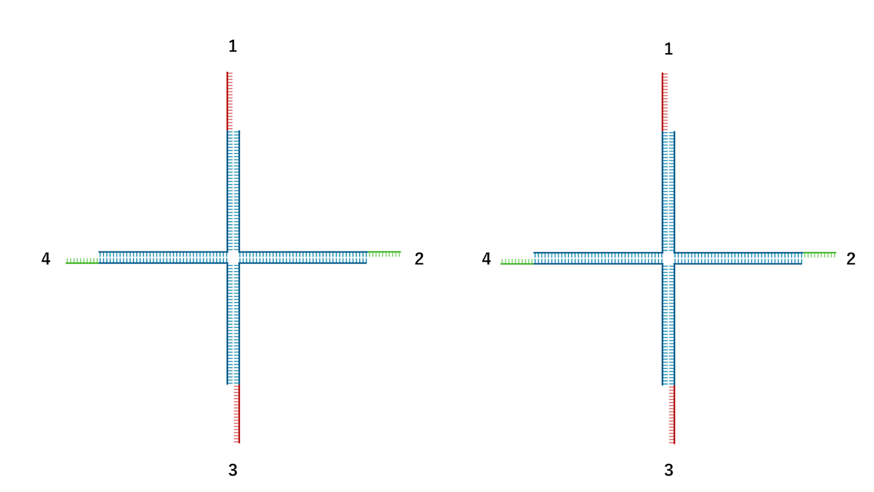
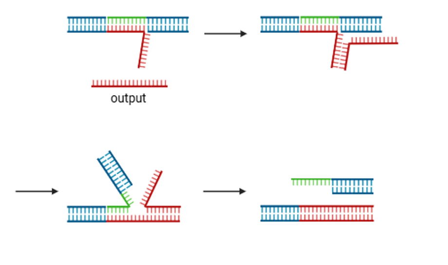

Discussion
Summary of Experimental Results and Design Issues
設計したゲル用のDNA4種を混ぜても目に見える大きさのゲルはできなかった。PAGE電気泳動の結果から十字のモチーフは設計通りにできていると考えられ、DLSの実験からモチーフが数μmの構造を成していると分かった。
DLSとアガロース電気泳動の実験で、この数μmの構造にentropy driven circuitのoutput, fuel, バッファを加えた時の変化を調べた。全ての場合で数μmの構造は減少したが、それぞれの変化に大きな違いはなかった。これはゲルのDNAが相補性で結合しているのではなく単に凝集しており、outputがゲルの架橋構造を壊したのではなく、凝集していたDNAが溶液の希釈によって分散したためだと考えられる。
この原因として考えられるものが二つある。
一つ目はモチーフ間の結合箇所に溶解のためのトーホールドを結合箇所の間に作ってしまったことである。トーホールドは、二本鎖である箇所に比べて柔軟である。柔軟であるほど強い斥力がはたらき、また、スティッキーエンド間のハイブリダイゼーション速度が遅くなるため[1]、スティッキーエンドに1本鎖の部分が残るとゲルができにくくなる。
二つ目はスティッキーエンドが自己相互配列になっておらず結合するスティッキーエンドの組み合わせが半分になっていることである。下図において、相互配列の場合1は1, 2, 3, 4全てと結合できるが、私たちの設計の場合1は2か4としか結合できなく、結合する組み合わせが半分になっている。

改善案
上記の二つの原因に対してそれぞれ改善案を示す。 一つ目の原因については、Fig.2のようにトーホールドの位置を変える案が考えられる。トーホールドをモチーフ間の結合箇所の間ではなく、下図のように結合箇所の外側に配置することで、ハイブリダイゼーション速度の減少を防ぐことができると考えられる。 二つ目の原因については、ゲルのスティッキーエンドを自己相補配列にするという案が考えられる。その場合、従来のエントロピー駆動回路のoutputがスティッキーエンドをはがすことができなくなるので、スティッキーエンドをはがす配列をもつDNAを生成する、新たなエントロピー駆動回路を設計する必要がある。
